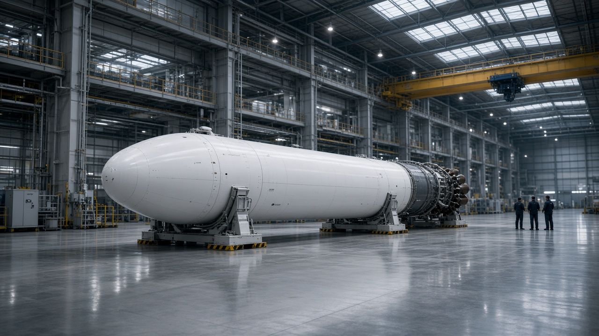
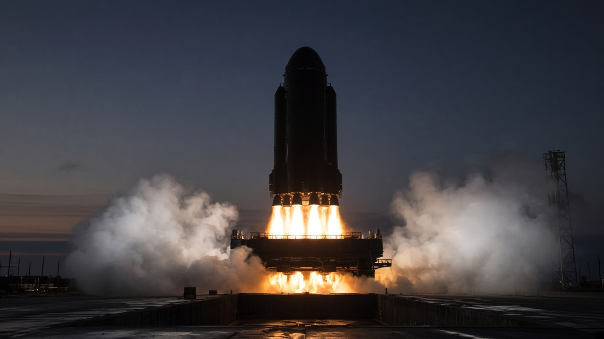

Лётное изделие · B1041 · на старте
EBAL S1
Две ступени, метан и жидкий кислород. Корабль «Смена» закрыт створками обтекателя: так первая пилотируемая машина повторяет аэродинамику беспилотной «Север-0».
- 68,6 мвысота
- 4,0 мдиаметр
- 538 тзаправленный
- 1,47тяговооружённость

Керн · корпус 7
Сборка
Ступени сваривают и стыкуют на базе «Керн». B1041 уехала отсюда 18 октября. В зале сейчас B1042 — грузовая, под «Север-2» 19 декабря.
Баки — алюминий-литий. Двигательный отсек приходит с огневого стенда №2 уже с девяткой. Обтекатель, 4,0 на 11,2 м, клеят в соседнем пролёте. Створки на «Север-1» не возвращаем: ловить их нечем, и в зачёт миссии это не входит.
| «Керн» E9 | |
|---|---|
| Цикл | газогенераторный |
| Тяга | 860 кН у земли |
| Импульс | 311 с у земли, 337 с в вакууме |
| Давление | 162 бар в камере |
| Дроссель | 57–100% |
| Посадка | центральный двигатель, до 57% |

2024 · это не лётная машина
Ч-2
Стендовое изделие, сталь без окраски. На нём в ноябре 2024 впервые одновременно работали девять двигателей, пять секунд. Белые лётные S1 начались позже. Путать Ч-2 с B1041 на фотографиях пуска не стоит: другой борт, другая задача.

Возврат · LZ-1
Посадка
Решётчатые рули, четыре опоры, тормозной импульс и посадочный. Площадка в 2,8 км от LC-1, в просеке. На «Север-0» ступень B1037 села со второго включения в допуск. B1041 идёт по той же программе, запас топлива на посадку заложен отдельно от выведения корабля.
- E9V980 кН, вторая ступень
- 368 симпульс в вакууме
- 12,8 тНОО, с возвратом
- 17,4 тНОО, без возврата

Корабль «Смена»
Смена
Четыре кресла, на первом пуске заняты два. Спускаемый аппарат садится на сушу. Аварийный увод — четыре твердотопливных двигателя в хвостовой части, вместе со створками обтекателя.
| Борт 01 | |
|---|---|
| Масса | 9,6 т с экипажем и грузом |
| Жизнь | четверо суток, на полёте трое |
| Посадка | парашют и ДМП за 1,2 с |
| Район | полигон П-4 |
| Стыковка | узла нет, на «Север-1» не нужна |
Масса
538 тонн на столе. Ниже расклад, из которого эта цифра собрана. Тяга девятки у земли — 7 740 кН, тяговооружённость 1,47.
-
Первая ступень, сухая
Баки алюминий-литий, двигательный отсек приходит со стенда №2 уже с девяткой. Опоры и решётчатые рули входят в эту массу.
-
Топливо первой
Сжиженный природный газ и жидкий кислород. Запас на посадочный импульс заложен отдельно и в выведение корабля не тратится.
-
Вторая ступень, сухая
Один E9V, 980 кН в вакууме, удельный импульс 368 секунд. Работает с 02:38 до набора орбиты.
-
Топливо второй
Та же пара компонентов. Заправка начинается после первой ступени, около 08:50 в сутки пуска.
-
Обтекатель
Две створки, 4,0 × 11,2 м. Сбрасываются и не возвращаются. На «Север-2» створки другие: там не корабль, а «Керн-1».
-
Корабль и прочее
«Смена» с людьми и грузом — 9,6 т. Оставшиеся 2,8 т — переходной отсек, остатки заправки в магистралях и то, что не раскладывается по бакам честно.